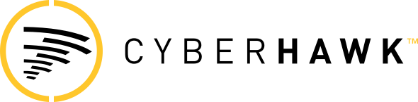

Real-time data insights for machine performance
Elinext built an industrial data platform that connects production data and shows improvement insights for OEE.
Read case study
Prepared for John Yeaman and Cyberhawk IT
Cyberhawk already proves the market. The next risk is keeping iHawk fast, secure, and easy to change while AI workflows, global customers, and Ondas integration add load.
We saw the June 18, 2026 Ondas acquisition announcement and the Visualive AI release. That makes iHawk's product and IT backbone a board-level asset, not only an internal system.
iHawk has moved beyond a drone data portal. It is now a core system for visual intelligence, AI inspection work, and global asset decisions. Shell's renewal shows the platform can support thousands of users across many countries. Visualive also adds open AI model paths, bulk imports, custom workflows, and richer roles. If those pieces grow without tighter release checks, customer trust and integration speed can suffer.
Map AI-to-annotation, bulk import, custom workflow, and role changes into a regression pack. That gives IT one checklist before new integrations land.
Compress heavy media, serve responsive images, and gate video on the iHawk pages. That helps mobile buyers reach the demo form faster.
A small Elinext squad works under Cyberhawk's product or IT lead, with weekly demos and clear release evidence.
Map the integration laneDefine iHawk data owners, API edges, SSO needs, and support handoffs before Ondas-side systems touch production workflows.
Harden Visualive checksAdd tests for AI annotations, bulk import failures, custom workflows, and role permissions across customer and internal accounts.
Speed the demo pathShip responsive media, lighter scripts, and monitored lead forms for Cyberhawk and iHawk mobile pages.
Release with evidencePackage smoke results, access-control checks, import health, and rollback notes for each weekly release delivery.
Elinext is a full-cycle software development company, active since 1997, with about 700 in-house specialists and no freelancers. For a critical infrastructure platform, the useful fit is secure web, backend, QA, DevOps, and data work. Elinext holds ISO 9001 and ISO 27001, which matters when product changes touch enterprise data and access. Named customers include Siemens, Broadcom, Volkswagen, and TUI. That fits a focused iHawk squad that can add capacity without breaking Cyberhawk's operating model.
Elinext built an industrial data platform that connects production data and shows improvement insights for OEE.
Read case study
Elinext reduced release time for an infrastructure software provider by improving automated tests and pipelines.
Read case studyA short call can pick the safest first slice.
Start the conversationPrepared from public Cyberhawk, iHawk, Ondas, BuiltWith, Lighthouse, and Elinext case-study sources.